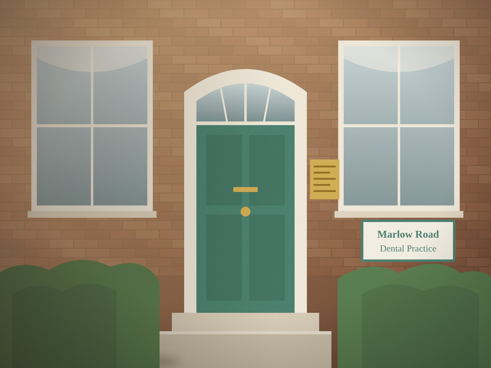

| Telephone 01632 960142 27 Marlow Road, Harrowmere HM3 2QT |
Opening Hours
| Monday 8.30am - 5.30pm |
| Tuesday 8.30am - 5.30pm |
| Wednesday 8.30am - 5.30pm |
| Thursday 8.30am - 7.30pm |
| Friday 8.30am - 4.00pm |
| Saturday 9.00am - 12.30pm (alternate weeks) |
| Sunday Closed |
Closed for lunch 1.00pm - 2.00pm
Emergencies
If you are a registered patient and need urgent help when the practice is closed, please ring 01632 960199.
Practice News
September
We are pleased to welcome Dr Priya Raman to the practice. Dr Raman is seeing patients on Mondays, Tuesdays and Thursdays.
June
Our new hygienist room on the ground floor is now open, so there are no stairs to climb for a scale and polish.

Welcome to Marlow Road Dental Practice

Marlow Road Dental Practice has been looking after the teeth of Harrowmere families since 1991. We are an independent practice in a converted Victorian house at the top of Marlow Road, five minutes walk from the Market Square.
The practice was opened by Dr Alan Whitcombe, who still sees patients four days a week. Many of the children he first treated in the nineties now bring their own children to see us, which we think says more than any advertisement could.
We offer a full range of general dentistry for adults and children, a hygienist service, and cosmetic treatments such as tooth whitening and white fillings. We take our time, we explain what we are doing and why, and we will always give you a written estimate before any treatment starts.
New patients are welcome. A new patient examination takes about 40 minutes and costs £42 including any small x-rays that are needed. Please telephone 01632 960142 or call in at reception to register.
Nervous about the dentist?
You are not alone - about one in four of our new patients tell us they have put off coming for years. Please let the receptionist know when you book. We will give you a longer first appointment with no treatment at all, just a look and a chat, and you can stop at any time by raising your hand.
Children
Children under 18 are seen free of charge when a parent is a member of our Practice Plan. We like to see children from the age of two, so that a visit to the dentist is normal long before they ever need anything doing.
Getting here
There is free parking for six cars behind the practice, reached from Tanner's Lane. The number 14 bus stops outside the door. The ground floor surgery and hygienist room have step-free access from the side entrance.
Click here to read about our treatments | Click here for our fees | Click here for a map
© 2008 Marlow Road Dental Practice, 27 Marlow Road, Harrowmere HM3 2QT. Tel: 01632 960142. Email: reception@marlowroaddental.example
This site is best viewed at 1024 x 768 in Internet Explorer 6 or above. You are visitor number 018,442